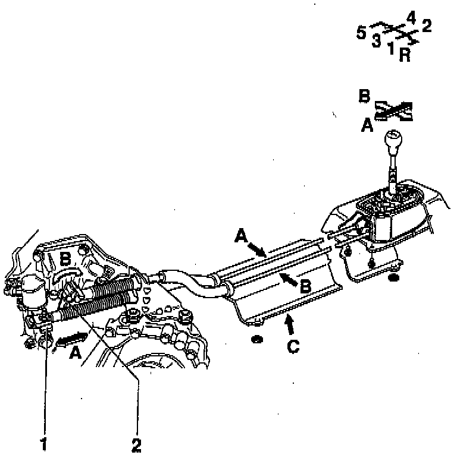

Shift Linkage: Description and Operation

GEAR SELECTOR MECHANISM
Installation position
A - Gear change cable
B - Gate selector cable
C - Heat shield Holds selector cables in position
Remove before removing gear selector mechanism
Shift lever control
Arrow -A- (black) - Gear selection
Arrow -B- (white) - Gate selection
1 - Gear selector lever
2 - Relay lever with actuating arm